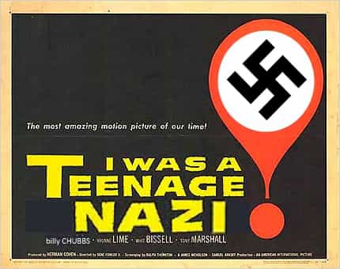
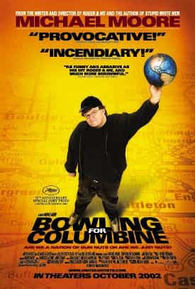
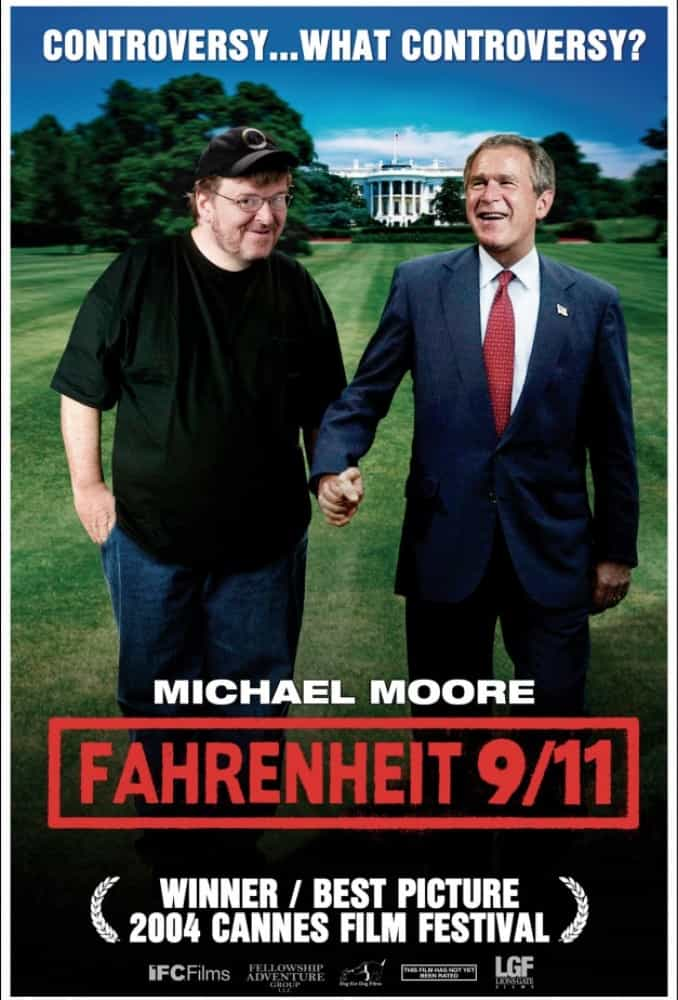
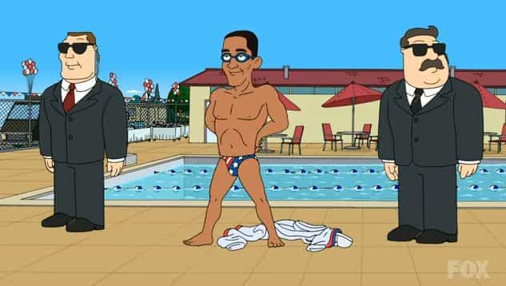
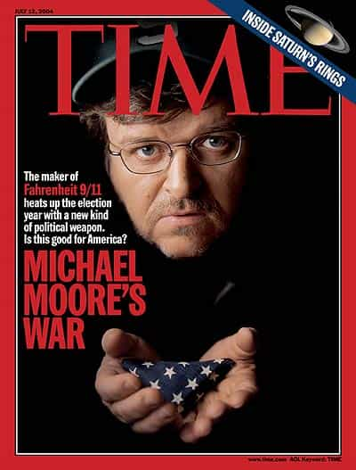

< < < Back
Why Hasn’t Michael Moore Made An Obama Documentary? – Return Of Kings
I came of age during a time when a massive transition was taking place in how schools were run. I was six years old when the Columbine shooting first rocked the parents of the western world, and eight when 9/11 further eroded any sense of safety parents of the early 2000’s felt. I grew up in the dying age of “kids will be kids,” and experienced firsthand how school changed into a place of thought policing, politically correct indoctrination and mental suppression induced via drugs.
I’m not exactly sure what grade it started in (3 or 4), but every spring until I graduated high school an anti-bullying assembly would be called. The violence amongst children in school which had existed since the dawn of the public school system now suddenly had parents everywhere worried that little Timmy being hit with a snowball today meant bigger Timmy coming back with an Ar-15 tomorrow. Like most awareness attempts aimed at kids and teenagers, these assemblies were always roundly mocked by the actual students themselves.
I myself found them exceptionally repugnant, since I faced a lot of violence from immigrants before my family finally decided to move us to a new city at the end of my grade 9 year. I’ve touched on it lightly before, but I grew up in a city whose council decided to welcome a massive influx of third world immigrants (mostly PTSD Somalis), and within a summer my school went from a fairly safe, first world child dominated place to a racially-fueled war zone.

So I found it not so amusingly ironic that we were forced to sit in a gym and listen to the evils of bullying when me and my small Neo Nazi gang (yes, I Was A Teenaged Nazi) were constantly sporting bruises and cuts from our weekly fights with the Aboriginals and Somalis and Sikh kids. I originally fell in with the burgeoning youth Nazi scene because the adults refused to listen to me or my friends when we complained about being jumped after school or having to cluster into groups at recess for fear of being mugged by kids who looked different then us for our lunch money. And yes, I do mean mugged—this was no school yard bullying. If we didn’t hand over our cash when confronted we were hit with weapons, bludgeoned with rocks, you name it.
One day on my way home from school some Aboriginal kids caught me alone while I was playing a Pokemon game on my Game Boy, and when I refused to hand it over I got my lip split open by a sawed off hockey stick. It’s actually a lot funnier in hindsight. Of course, since the elephant in the room was a racial issue, it received no acknowledgement.
When we moved to our new and more peaceful city, I lost most of my white supremacy convictions. I had befriended the Neo Nazis in my school for the same reason a white inmate joins them in prison. During my three years at my new and gloriously safe high school, there were very few incidents that could be called bullying. Still, the anti-bullying seminars continued. My high school even ran them in the spring like they had back in my old school. The main difference was by the this time a very (in)famous documentary about Columbine had been released, and was used to augment the anti-bullying lecture by making us students all sit in the gym and watch it around the end of every April.
The documentary was called Bowling For Columbine [2002], an anti-gun film released by controversial American filmmaker Michael Moore.
I
I doubt there isn’t a single reader over 24 who hasn’t seen this documentary already, but if you haven’t (or simply feel like watching it again), here is a Youtube link. There’s no need to worry about Copyright yadda yadda, since Michael Moore has stated he doesn’t care about people pirating or watching his movies for free.
The first time I saw the documentary I was more or less unfazed by it. I first saw it with my grade 10 history class, and due to my upbringing I didn’t identify with the murdered teenagers at all. I didn’t identify with the shooters, Eric and Dylan, either (though, through my experiences, I could see where they were coming from). To me, the duo were pussies with a low kill count who couldn’t even man up and charge the police, instead taking the coward’s way out by shooting themselves.
I did not have any choice in watching this documentary come every April. It was a prominent movie in my formative years, and I shudder to think how I might have been affected by it’s skewed message of gun ownership and troubled teenagers had I been more sheltered in regards to both those issues. My dad is a proud gun owner, and I was shooting my own .22 by the time I was 12. And thanks to the violence I had suffered back in Junior High and Elementary school, I knew that kids didn’t need guns to inflect copious amounts of pain on one another.
Yet I have been subliminally affected by Michael Moore’s documentary. I recently heard a Marilyn Manson song I’ve never heard before, and during one part of it my mind suddenly lit up with 911 calls made by the Columbine students during the shooting back in 1999.
Especially around the 2:20 mark. I sat there, thinking about why I was remembering 911 calls and I suddenly realized that the song was from Moore’s movie. I haven’t watched Bowling For Columbine for six years, yet I immediately recalled entire scenes from it simply because of a guitar chord.
By complete coincidence, a few days later I stumbled upon this article. As a film buff I was reading about this year’s Toronto International Film Festival and just happened to see that Michael Moore was talking about his first film, Roger And Me, a scathing documentary about General Motors pulling its factories out of Moore’s home town of Flint, Michigan, and destroying the town’s economy.
Moore appeared Monday night before an appreciative audience at a showing of “Roger & Me,” his 1989 landmark movie that used satire to explore the devastating economic implosion of Flint caused by General Motors cutting 30,000 jobs. The movie has been digitally restored and will be available next month on Blu-ray and DVD and through a limited theatrical release.
Clips in “Roger & Me” of shuttered businesses and abandoned homes seem almost identical to the footage found in contemporary documentaries about Detroit’s financial crisis. The portrayal of corporate downsizing greed still has a ripped-from-2014 headlines feeling as well.
Interesting, Michael Moore has also stirred some controversy amongst his biggest fans, the American left, by half heartedly denouncing the left’s treasured president Obama.
“I think Obama … he’s done many, many good things,” Moore soft-pedaled to Hollywood Reporter, before going off. “But he’s also been a huge disappointment.”
Moore continued: “When the history is written of this era, this is how you’ll be remembered. He was the first black president. OK, not a bad accomplishment. But that’s it. That’s it, Mr. Obama. A hundred years from now, (it’ll be noted that) he was the first black American that got elected president. And that’s it — eight years of your life and that’s what people will remember.”
Obama has long touted his administration’s bailout of the American auto business.
But Michigan native Moore said Obama saved corporate executives — and not the working men and women on the assembly lines.
“You saved GM, you saved Chrysler,” Moore raged. “Detroit, at this point, would stand a better chance if they were an Iraqi or Syrian city in terms of some sort getting help.”
Obama isn’t the first President Moore has criticized. Moore’s follow-up to Bowling For Columbine was a scathing portrait of George W. Bush and the 2003 Iraq War, Fahrenheit 9/11 [2004]. (Youtube link) Even if you’re aware of Moore’s manipulative editing and writing techniques, Fahrenheit 9/11 is a harrowing movie to watch and one of the absolute best examples I’ve ever seen of an attack piece. Many of the techniques Moore uses I am using right now, in order to criticize him: so I guess being indoctrinated by his documentaries as a teenager isn’t a complete negative.

Moore has shown that, when something pisses him off, he can really hurt them. It wouldn’t be outlandish to say that Moore’s documentaries of the 2000’s were highly influential in turning the American public against right wing and Republican politics. His documentaries received standing ovations at prestigious film festivals and were massive blockbusters in theaters. Fahrenheit 9/11 is (currently) the most financially successful documentary ever released, pulling in 119 million dollars. Jackass 3D (117 mil) is second.
Moore won a Best Documentary Oscar for the movie, and earned a lot of cachet amongst a lot of people with myriad beliefs. In fact, as a result of Bowling For Columbine Moore actually shamed the K-Mart mega store chain into publicly saying it will cease selling handgun ammunition. Moore has proven he has the talent and resources to absolutely tear apart those people and organizations he thinks are grievously harming the American people.
Does the current American, President Obama, not fall into that category? Moore certainly doesn’t seem to think so, judging by his lack of outcry over Obama’s numerous shortcomings, many of which have harmed (and continue to harm) the American people. Under Obama’s Presidency there have been a myriad of scandals. Type in Obama Scandal into the Google search engine and see what comes up. The NSA spying scandal is one of the most disturbing and alarming conspiracies in the history of the United States, and Obama did not disband or limit the NSA in any way.
Edward Snowden, the whistle-blower who revealed the extent of how much the American Government is spying on its own people, is currently in exile, and his treatment by the Obama presidency is one of the most shameful episodes in the history of the United States. And for the last few years Obama has been trying his damndest to get America embroiled in another Middle Eastern war.
Were any of these scandals or policies revealed under President George W. Bush, would Moore have been as quiet about them as he has been with Obama? Why has Michael not made a single major documentary since his 2009’s Capitalism: A Love Story? Interestingly enough, Moore provides one answer himself during an article he wrote about Obamacare when it was unveiled.
TODAY marks the beginning of health care coverage under the Affordable Care Act’s new insurance exchanges, for which two million Americans have signed up. Now that the individual mandate is officially here, let me begin with an admission: Obamacare is awful.
That is the dirty little secret many liberals have avoided saying out loud for fear of aiding the president’s enemies, at a time when the ideal of universal health care needed all the support it could get.
Moore has tried to portray himself not as rigidly left or right in political beliefs, but simply to show himself a man of the people. This had some credibility back in the 2000’s, when he tackled issues he believed were destructive to the average American—guns, an badly handled war, a corrupt healthcare system (Sicko, 2007) and an even more corrupt financial system.
However, his complete silence on Obama’s inept Presidency is showing where Moore’s politics lie. Moore is, first and foremost, a leftist. That is where his loyalty is, and those are the types of people he prefers. After all, Moore backed Obama before the man had even shown what sort of president he would be (as he admits in a 2009 interview with Howard Stern).
[The discussion about Moore and Obama begins at the 3:55 mark]
Obviously, judging by his recent comments and articles, Moore thinks Obama is a failure as a president. Then why has he released no documentary judging Obama? Articles and opinion pieces do not hold the power a well-made, entertaining documentary would have in criticizing the Obama presidency. Why did the junior Bush deserve the most vitriol Moore could summon when Obama’s actions are little different from what one of Moore’s hated Republicans would do?
It’s clear by now that the politicians of both the right and left are utterly corrupt, and both political parties are actively harming the American people. That makes Obama fair game for scathing commentary in my book. Why doesn’t Moore feel the same way? There are five possible explanations for Moore’s actions, the first of which has already been explained.
1. Michael Moore Is A Loyal Leftist
Moore’s comparative silence on the shortcomings of the Democrat party are the result of Moore’s party loyalty. Before anything else, Moore identifies with the left, the Democrats, the liberals: regardless of how much their actions stray from liberalism and how corrupt they are. Moore only sees his world through party labels, and safe guarding the icons of the left is more important to him than helping his fellow Americans see the truth. He has already said he is deeply disappointed with Obama, and Obama has done enough harm to the American people to warrant a Moore documentary. Why hasn’t he made one then? Where does his loyalty lie? To the little guy, or to the party?
2. Michael Moore Doesn’t Actually Care About The American People
Moore doesn’t need to make another documentary. He lives very comfortably, and has more than enough money to spend the rest of his life in leisure and comfort, to say nothing of the fame and kudos he still enjoys from his fans. All his bluster about representing the little guy, the average American, is exactly that: bluster.
3. Michael Moore Is A Racist
Racism isn’t just a negative thing, like calling a person of a different ethnicity a derogatory name. Treating someone different simply because they’re physically different from you is a form of racism. Moore criticized white people for far less than Obama has done because Moore holds white people up to a higher standard than he does black people. For Moore, President Obama is as good an American President as any black man can possible be, and therefore he does not criticize Obama like he did Bush because Moore believes white people could and should deliver better Presidents than Bush.

4. Michael Moore Is A Coward
Moore’s previous targets have all been easy cultural “bogeymen”: gun control, republicans, corporations. Pop culture has been making fun of silly (or scary) god-fearing white rednecks for nigh on 40 years now, and at this point the public has been preprogrammed to approve any bashing of pro gun, pro capitalist or pro conservative peoples (especially white ones) without giving their platform or ideas even a cursory thought.
It’s one thing to make a documentary about how bad guns or corporations are when you don’t even need to win over the viewing public. It’s a whole other to attack a beloved figure, one whom has been portrayed as such a good guy that simply challenging him means you’re evil. Plus, in “post” racial America, any criticism of a black man automatically makes you a racist, so there’s that fun cesspool to wade through as well.
Moore, in making a documentary critical of Obama’s presidency, would be opening himself up to a flurry of attack from all directions. His traditional right-leaning enemies would come down on him, and his left-leaning allies would feel betrayed and also hang him out to dry: add in to that the race war profiteers proclaiming Moore to be this week’s Racist Anti-Christ and Moore would be facing a very cold winter indeed.
5. Michael Moore Is Simply Lazy
This is the most likely explanation of Moore’s silence on the Obama front. After all, look at how big the guy has let himself get before.
As I mentioned above, any documentary on Obama would require a far greater amount of effort and research to present a truly effective portray of how inept the president is. Moore won’t be able to get cheap laughs by showing a redneck militia group patrolling depressing Michigan farmer’s fields for Muslim invaders. The audience would be incredibly uncomfortable the whole time, and it would be up to Moore to win them over with his own wit.
Moore is nearly a senior citizen. He has never been in good shape his whole adult life, and his recent divorce has probably sapped what little mental energy he has left. It’s likely that the man is completely burnt out.
Still: how hard is it to make a scathing documentary about the harm Obama has done the American people?
Not very. I have been writing for Return Of Kings for nearly a year now, and I have much experience with writing attack articles under pressure. My Zoe Quinn article, about the slut who compromised an entire industry’s integrity? I wrote that in seven hours from scratch, start to finish, while I was half drunk in a sleazy hotel room after I had been up for 35 straight hours travelling across Canada.
My non-writing life consists of me working 8-14 hour days as an electrician, going to the gym and lifting heavy stuff every other day, and in between that semi-successfully weaning sex out of the most stuck up, hard to get, and egotistical generation of women that’s ever existed. And yet I still pump out articles with (some) regularity.

Michael Moore hasn’t had to worry about the bills for a long time. If he wanted to make a documentary about Obama’s numerous shortcomings, and the Democrat’s betrayal of the American public’s trust, that’s all he would have to focus on. He doesn’t have kids, his wife is gone, and he obviously doesn’t have any extraneous regimens he needs to stick to. The most time consuming part of the documentary would be travelling to get the token interviews and do the token stunts (trying to get into the White House unannounced for a one-on-one interview with Obama, for example), and the editing process. And since we no longer drive around in covered wagons, and film has become digital, both those activities have become ludicrously easy.
Within an hour I thought of a pretty effective and simple documentary. The theme of it? Obama (and the American Democrat party) is no different than Bush Jr. and the Republican party. Both no longer had the interests of the American people in mind—if they ever did. High concept summary? Meet the new boss, same as the old boss.
Moore has approached his documentaries from an entertainment standpoint, so instead of going essay style (intro, body, conclusion), Moore needs only to have a beginning, middle, and end. Obama’s presidency automatically lends itself to this structure.
Beginning: Change and Hope, the 2008-2011 years, ending on the high point of Bin Laden’s assassination.
Middle: Re-election and the scandals, 2012-2014. The push to more wars in the Middle East, the Snowden affair, the attempts to install a pro-west puppet in the Ukraine and the disastrous after effects.
End: Endgame, 2013-16. The more things change, the more they stay the same. Focus on Obama’s complete failure to live up to his promises, and point out his numerous hypocrisies.
A good ending can make or break a movie, and here’s one I thought up and wrote within a half hour which encapsulates the theme of “All these bastards are the same and are trying to screw you.”
Set up video juxtaposition of George W. and Obama when they talk about the same topics. For example, take snippets from Obama’s words uttered during his declaration of war on Syria, and George W’s taken from his declaration of war on Iraq.
Obama: ‘My fellow Americans, for nearly seven decades, the United States has been the anchor of global security.’
George W: ‘My fellow citizens, at this hour American and coalition forces are in the early stages of military operations to disarm Iraq, to free its people and to defend the world from grave danger.’
O: ‘America is not the world’s policeman. Terrible things happen across the globe, and it is beyond our means to right every wrong. But when, with modest effort and risk, we can stop children from being gassed to death, and thereby make our own children safer over the long run, I believe we should act.’
GW: ‘Our nation enters this conflict reluctantly, yet our purpose is sure. The people of the United States and our friends and allies will not live at the mercy of an outlaw regime that threatens the peace with weapons of mass murder.’
O: ‘Tonight, I give thanks again to our military and their families for their incredible strength and sacrifices.’
GW: ‘For your sacrifice, you have the gratitude and respect of the American people and you can know that our forces will be coming home as soon as their work is done.’
O: ‘Let me make something clear: The United States military doesn’t do pinpricks.’
GW: ‘This will not be a campaign of half measures and we will accept no outcome but victory.’
O: ‘That’s what makes America different. That’s what makes us exceptional. With humility, but with resolve, let us never lose sight of that essential truth.’
GW: ‘The dangers to our country and the world will be overcome. We will pass through this time of peril and carry on the work of peace. We will defend our freedom. We will bring freedom to others. And we will prevail. May God bless our country and all who defend her.’
O: ‘God bless you. And God bless the United States of America.’
Then we put video of the Presidents out golfing side by side, taking swings in unison, and quick cut to thermal bombing footage from 2004 and 2014 as their golf balls fly majestically away. Play the YEAHHH scream from The Who’s “Won’t Get Fooled Again” as the explosions occur, and cut to credits as the song’s very relevant lyrics accentuate the point of the documentary:
The change, it had to come
We knew it all along
We were liberated from the fold, that’s all
And the world looks just the same
And history ain’t changed
‘Cause the banners, they are flown in the next war
I’ll tip my hat to the new constitution
Take a bow for the new revolution
Smile and grin at the change all around
Pick up my guitar and play
Just like yesterday
Then I’ll get on my knees and pray
We don’t get fooled again
Boom. Meet the new boss, same as the old boss. There’s Moore’s devastating Obama documentary.
Michael Moore’s documentaries have affected many people in a myriad of ways. I myself have likely been programmed to a degree by Moore’s beliefs, and it’s even more likely that many hundreds of thousands, if not millions, of people who have viewed Moore’s documentaries have been similarly brainwashed to favor Moore’s prejudices.
Michael Moore is at a crossroads. He can prove himself a friend to the small guy, the average American, and release at least one more documentary completely tearing apart the Obama presidency and the American liberals. Or he can rest on his laurels and go down in history as a hypocritical leftist sock puppet who simply talked a good game when the going was easy. The ball is in your court Michael.
Read More: You’ve Already Seen One Of The Greatest Red Pill Movies Ever Made


{kind=link}
{kind=link}
{kind=link}
{kind=link}
{kind=link}
{kind=link}
{kind=link}